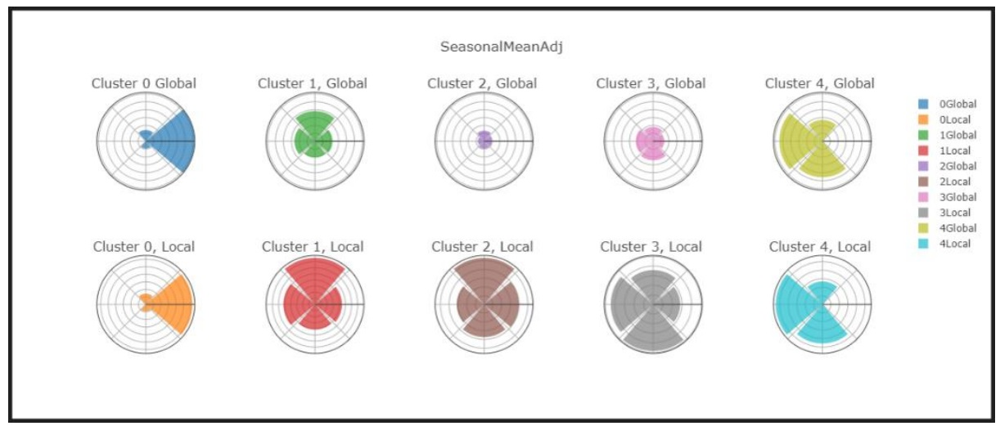

While pursuing my MBA and trying to figure out what I wanted to pivot into,
I found that the classes that I was enjoying the most were data based classes.
Looking back, it doesn't surprise me that I gravitated towards Data Science
as I applied similar techniques in my previous career.
After finishing the MBA, I decided to add on a MS in Business Analytics.
These are some of the projects that I completed while earning my dual degrees.
This was the second of four major reporting projects for the Machine Learning class. With an emphasis on using learning curves, experimentation was highly encouraged for each of these projects. Guidelines were intentionally ambiguous with little direction given to students for how to attack the problem or how to generate visualizations.

This project served as the foundation of my Machine Learning course. The data required several forms of manipulation and transformation which would be used in future projects.
The primary goal of this first project was to create a gradient descent algorithm and to visualize through learning curves how hyperparameters effect the results.
As I look back and compare this first Python project to the others, I am amazed at how much better my visualization skills became in such a short amount of time.
Part 3 of the Machine Learning course. Similar to the second assignment, the goal this time was to implement Arificial Neural Networks for simple classification. This time, I experimented with two dimensional learning curves and indicated alternative hyperparameters that could serve as time friendly substitutes to the top performer.

The final component of the Machine Learning course, this assignment combined unsupervised learning through K-Means and Expectation Maximization along with feature selection methods including Forward Selection, PCA, ICA, and Random Projections.
I appreciated this assignment because it was done in a very tight window with a final submission date during finals. I was forced to weigh how deep I explored the transformations while still allocating time to ensuring that I excelled on my final exams.

This project sourced a Kaggle data file to create a fictional business case scenario in which our group simulated a consulting firm that worked with production studios to find out which streaming platform was most likely to pick up their movie.
Personally, I took responsiblity for the first 1500 lines of code, effectively performing all predictive analysis. Although I can look back and realize that there are areas for improvement with our approach, I am grateful to have taken on such a significant portion of this project as it served to pique my interest into the world of machine learning!